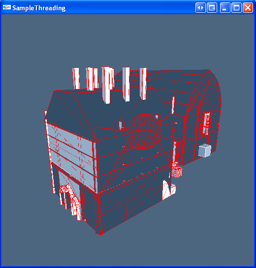

Sample Threading

Overview
Demonstrate 4 different approaches to threading:
- Application supplied scheduler
- Polling, i.e. the SDK manages the work queue and the application can poll a function to perform work
- SDK managed threading (At present this is likely to yield the best performance)
- No threading
Path
| Source: |
(SDK Path)\Samples\SampleThreading\src |
| Executable: |
(SDKPath)\Bin\... |
Copyright © 2008 NVIDIA Corporation, 2701 San Tomas Expressway, Santa Clara, CA 95050 U.S.A. All rights reserved. www.nvidia.com